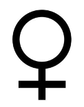
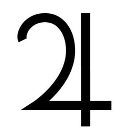

| ( ) nodrm | |
| Unknown | |
ASTRO
DICE
A Bigginers Guide
K.YASOKAWA
ASTRO DICEは 3つのダイスから成り立ちます。(カードは 3デッキ。) ひとつは惑星。そして黄道十二宮のサインを記したモノ。3つ目はハウ
スナンバーを記したものです。惑星は質問や問題に関わっているあなた
の人格、主役になっている面です。
黄 道 十 二 宮 は 質 問 や 問 題 、 ま た は 問 題 を 取 り 巻 く 周 囲 の 感 情 、 エ ネ ル
ギーの現象化を表します。
ハウスは今回の質問や問題があなたの人生、生活の何に影響を与えてい
るか？ もしくはあなたの希望、欲望を表します。
これらの要素を組み合わせて、あなたの現状、流れをリーディングし
ていきます。初めは惑星「主語」→黄道「動詞」→ハウス「結果」と言う
風にシンプルに考えると良いでしょう。
例
惑星が水星を示した場合、コミュニケーション。会話や通信などのエネ
ルギーを示します。
次 に 黄 道 は そ の エ ネ ル ギ ー が ど の よ う に 現 象 化 し て い る か を 示 し ま す 。
例えば獅子宮なら公けに、ドラマティックにという事になります。
最後にハウスはあなたの何に影響するかがチェックできます。仮にもし
10の場合、あなたのキャリア、本職、あるいは世間の評判を示します。
簡潔にすると、惑星は「何」を活かすか？
黄道は「いかに、どうすれば？」
ハウスは「どこ」に影響するか？結果への道標。
ア ス ト ロ リ ー デ ィ ン グ の 出 す 答 え は 単 純 な イ エ ス か ノ ー で は あ り ま せ
ん。リーディング前のあたなの考えや、あるいは発展しそうな状況など、
あ な た の 質 問 を 的 確 に 絞 っ て く だ さ い 。 例 え ば「 私 は こ の 新 し い 仕 事 を
受 け 入 れ る べ き で す か ？ 」 と 質 問 す る よ り も「 も し 私 が こ の 仕 事 を 受 け
入れたなら、どんな未来、影響をもたらしますか？」という感じです。
アストロリーディングは未来を一緒に築き上げる手助けをしてくれるの
です。アストロリーディングが示す未来は、あなたが気付かなければな
らない根本的な視点と洞察力を与える事でしょう。
ま た 、 も し あ な た に 二 者 択 一 の 迷 い が あ っ た と し ま す 。 ア ス ト ロ リ ー
ディングは関連するシンボルを通して、より適切な方法を明らかにして
くれます。例えばあなたが飛行機か船のどちらで旅行すべきか決めよう
とした状態で、月と双魚宮が一緒に登場したら、明らかに水の象徴です
から船が良いと判断していいでしょう。あなたの質問が具体的であれば
あるほど、答えも一層明確になります。



惑 星
惑星が示すのは問題そのもの、
もしくは問題に関わっている個人の側面、
活性化している人格、
主人公になっているあなたの考え方、エネルギーを表します。
太陽
月
水星
金星
火星
木星
土星
天王星
海王星
冥王星
ノースノード
月の昇交点。アセンディングノード、
もしくはドラゴンヘッド。
サウスノード
月の降交点。ディセンディングノード、
もしくはドラゴンテール。
ダイスの場合、ノースノード、サウスノードは
下線を目印にして見分けてください。
「 太 陽 」 は す べ て の 占 星 術 の「 惑 星 」 の 中 で 最 も 強 力
太 陽
で す 。 も し 太 陽 が 出 た な ら 、 問 題 は あ な た 自 身 、 自
己表現やあなたの生命力に関係しています。
問 題 は 非 常 に 個 人 的 な も の で 、 太 陽 の 活 気 と 力 が あ
な た に 備 わ っ て い ま す 。 「 太 陽 」 は 、 オ ー プ ン で 陽
気で、暖かさと光をどんな状況でも運んでくれます。
そ し て 金 色 の 活 力 を 与 え る エ ネ ル ギ ー の 有 益 な シ ン
ボル。
あ る ケ ー ス で は 、 権 限 や 指 令 す る シ ン ボ ル で あ っ
て 、父 親や、もしくは 父 親 のような存在を意味する
こ と も あ り ま す 。 太 陽 が 現 わ れ る と き 、 あ な た は 自
分 本 来 の 姿 に な る 事 、 自 己 実 現 を 達 成 す る 為 に 備 え
る こ と に な り ま す 。 「 太 陽 」 は あ な た が 振 っ た 他 の
ダイスに光を与えます。
「太陽」はまたこんな意味もあります。
日 曜 日 、 ダ イ ヤ モ ン ド 、 ゴ ー ル ド 、 指 輪 。 女 王 。 大 統 領 。 ひ ま わ り 。
オレンジ。心臓。薔薇、菊、車輪、円盤、皿、丸、円、顔、目。
鷲 / 鷹・ ラ イ オ ン・ 孔 雀・ 白 鳥・ 馬・ 七 面 鳥 、 ヤ マ ア ラ シ / ハ リ ネ ズ ミ・
蜘蛛
「 銀 色 の 月 」 は 夜 の 女 王 で あ っ て 、 そ し て あ な た の
月
内面的な本質 :あなたの直観的な内なる感情を表しま
す 。 も し 月 が 登 場 し た ら 、 あ な た の 反 応 と 感 情 を 心
に 留 め る よ う 語 っ て い ま す 。 あ な た の 素 直 な 感 性 、
も の ご と に 対 す る 本 能 的 な 感 覚 の 信 頼 、 強 さ を 大 事
に し ま し ょ う 。 月 は あ な た の 感 情 か ら く る 感 覚 を 意
味 し ま す 。 そ し て 、 あ な た の 家 、 家 族 に 関 し て 問 題
を 意 味 し ま す 。 月 は ま た 母 で あ り 、 あ な た の 母 親 そ
の も の や 、 あ る い は あ な た 自 身 の 慈 愛 に 満 ち た エ ネ
ル ギ ー を 示 し て い る か も し れ ま せ ん 。 赤 ん 坊 あ る い
は 幼 児 期 に 関 係 す る 事 も 。 月 は 女 性 を 表 す 惑 星 で 、
あ な た の 人 生 に 関 わ る 女 性 を 意 味 し ま す 。」 は 、 あ
な た が 振 っ た 他 の ダ イ ス に 、 あ な た の 直 感 的 感 覚 が
影響を及ぼすことを示しております。
「月」はまたこんな意味もあります。
月曜日、鏡、海、波、洪水、ネズミの群衆、揺りかご、卵、ミルク、
リンパ液、体液、影、サイクル、直感、潜在意識、感情、死生観
狼、犬、コウモリ、熊、イルカ、ネコ、フクロウ、カタツムリ、ウサギ
蛾、
水 星 は 知 識 と コ ミ ュ ニ ケ ー シ ョ ン を 表 し ま す 。 も し
水 星
水 星 が 現 れ た ら 、 あ な た の 伝 達 す る 能 力 、 情 報 を や
り 取 り す る 能 力 、 あ る い は 論 理 的 思 考 能 力 に 関 連 し
て い ます 。 他 に出たサインの事を話すとか、書いて
表 現 す る と い っ た 事 が 問 題 を 解 決 に 繋 が っ た り 、 あ
る い は目 的達成に必要か もし れま せん 。 ま た、水星
は 速 度 を 上 げ る と か 、 情 報 を 発 信 す る こ と を 示 し 、
賢 く て 、 気 ま ぐ れ で す 。 そ れ は カ メ レ オ ン の よ う に
変化に富み、思考スピードも目まぐるしいです。様々
な 選 択 肢 を 提 供 し 、 柔 軟 で 若 々 し い 展 望 を 考 慮 す る
よ う 、 あ な た を 励 ま し て く れ て い ま す 。 水 星 は あ な
た が 考 え を 企 て て 、 動 き 回 っ て 、 そ し て 他 の 人 た ち
に 話 を す る よ う に 助 言 し て い ま す 。「 ど の よ う に 」、
「もしくはどこで」、「これをするべきか」は他のダイ
ス /カードに示されています
「水星」は他にこんな意味があります。
水曜日、マーケット、商業施設、描写、撮影、大道芸、芸人、ジャーナ
リスト、マスコミ、呼吸系、たんぽぽ、ゆり、アーモンド、多彩、取引、
貿易、知識、コミュニケーション、発信、流行、記録、鷹、亀、カエル、
フクロウ、キツネ
金 星 は 愛 の 女 神 の 名 に ち な ん で 名 付 け ら れ 、 あ な た
金 星
の 恋 愛 生 活 と 個 人 的 な 関 係 を 示 し て い ま す 。 も し 、
金 星 が 登 場 し た な ら 、 あ な た は 協 調 的 な エ ネ ル ギ ー
や美 (素晴らしい人、エネルギー ) に包まれているこ
と を 告げ ています。 あ なたの芸術的な面を引き出す
た め に 、 行 動 に 移 し た い 、 何 か を や り た い と い う 衝
動 を 表 し ま す 。 金 星 は 音 楽 、 色 、 そ し て ダ ン ス 、 芸
術、愛 (そして金銭 )と、当然ながら性的魅力を表し
ま す 太 古 か ら 魅 力 あ る 惑 星 と さ れ た 金 星 は ま た 、 純
粋 な 女性 エネルギーの象徴であり、人生における憧
れ、人物として少女やと女性を示すことがあります。
金 星 が 現 わ れ る と き 、 あ な た は バ ラ ン ス の と れ た 、
調 和 の 道 を と る よ う に ア ド バ イ ス さ れ て い て 、 他 の
何かと混ざり合うでしょう (特に他に出ているダイス
/カードの示すものと )
「金星」はまたこんな意味があります。
金曜日、花、銅、キス、 パステルカラー、ハト、アップル。薔薇、ヤシ、
ナナカマド、百合、ターコイズ、サファイア、翡翠、報酬、成功、五芒星、
黄金比、完璧、創造性、美学、感謝、敵対するモノとの和合。女性器。
蛇、鳩、トカゲ、白蝶貝、バファロー
火 星 は 赤 い 惑 星 。 勇 気 、 バ イ タ リ テ ィ ー の 象 徴 で 、
火 星
情熱と燃えたぎる灼熱のエネルギーです。
もし、火星が登場したなら、
そ れ は あ な た に 率 直 で 、 ダ イ ナ ミ ッ ク な 行 動 を 起 こ
せと告げています。
鍵は自信と男性的な勢いです。
火 星 は 熱 く て 、 強 く て 、 攻 撃 的 で 、 そ し て 燃 え る よ
う で あ っ て 、 迷 っ た り 、 そ れ を 実 行 す る 前 に 考 え 直
すような事はしません。
火星は行動の惑星です。男性のシンボル。
人 生 に お け る 出 会 う 少 年 や 男 性 を 表 す こ と も あ り ま
す 。 火 星 が 表 す 恐 れ を 知 ら な い エ ネ ル ギ ー を 、 ど こ
に 焦 点 を 合 わ せ 、 効 率 よ く 活 か す に は 他 に 登 場 す る
サインによって影響されます。
「火星」またこんな意味があります。
火曜日、ピストル、兵士たち、運動選手、鉄、ニンニク、ジンジャー。松。
筋肉と男性の性器。 野望、侵略。活力。アクティブ。直線的。熱狂的。
照準を合わせる。白黒ハッキリする。
キツツキ、アナグマ、ワニ、イノシシ。
木星は「喜びをもたらす」存在です。すべての惑星の
木 星
中で最も大きく、そして「王の中の王」 にちなんで名
付けられました。
木 星 は す べ て の 惑 星 の 中 で 、 最 も 幸 運 を 表 し ま す 。
も し 木 星 が 登 場 し た な ら 、 発 展 や 成 長 を 告 げ て い ま
す 。 積 み 重 ね た 自 信 や 良 い 行 い が 木 星 と 巡 り 合 わ さ
ると、視野が開け、あなたの世界が広がっていきます。
ま た 、 あ な た が ス ケ ー ル の 大 き い 事 を す る べ き で あ
る と か 、 寛 大 や 、 大 き な こ と を 考 え る べ き で あ る こ
と を 暗 示 し ま す 。 木 星 は 旅 や 勉 強 、 行 動 範 囲 の 広 が
り や心 の成長を通じて 、大 きな ステ ージ で 力を発揮
す る 可 能 性 を 示 し ま す 。 木 星 が 現 わ れ る と 、 あ な た
は最も明るくて、開放的なエネルギーを手にします。
事態は発展する事でしょう。
「木星」はまたこんな意味もあります。
木 曜 日 、 錫 、 オ ー ク の 木 、 カ ジ ノ 。 指 導 者 。 紫 の 絹 。 雄 鹿 。 パ レ ー ド 。
宴会。肝臓。寛大さ。幸運。富。拡張。トパーズ。シトリン。タイガー
アイ。王冠。稲妻。法。王座。
象。マンモス。クジラ。
土 星 は リ ン グ を 持 つ 惑 星 。 土 星 の 輪 は 制 約 、 責 任 と
土 星
耐 久 性を 意味します 土 星は年老いた父親のように忍
耐 強 く 、 一 歩 ず つ 地 道 に 育 つ 象 徴 で す 。 と て つ も な
く剛健で、辛抱強いエネル ギーを持っています。 土
星 は あ な た が 現 実 に 向 き 合 っ て 立 ち 向 か い 、 試 練 と
挑戦を通してあなたが成長することを表しています。
土星はあなたに心配や不安を与えるかも知れません。
また、土星は年を重ねた現実的な賢明さ (賢者 )を表
し 、 あ な た の 人 生 に お け る 先 輩 、 特 に 父 の よ う な 年
配 者 を表 します 土 星が現れると、あなたは何かに気
付 く よ う 、 用 心 深 く な る よ う 、 そ し て 地 に 足 を つ け
る よ う 助 言 さ れ て い ま す 。 あ な た は 責 任 を 負 う 準 備
を し て く だ さ い 。 そ し て 、 早 い 決 着 を 求 め る べ き で
は あ り ま せ ん 。 も し あ な た が 克 服 で き た な ら 、 あ な
たは岩ように -堅牢 な立場を築く事が出来ます。
「土星」はまたこんな意味もあります。
土曜日、リード、イチイの木隠者。壁。国境。境界。 時計。カレンダー。
錨。恐竜。ドラゴン。鳥。農業。鉛。骨。皮膚、そして歯。養殖。建設。
労働。長い研究。隠者。オニキス。黒曜石。ジェット。
天王星は独特な惑星です。すべてが革命的で、異なっ
天 王 星 ています。もし、天王星登場したなら、あなたにとっ
て 突 然 で 予 想 外 の 展 開 が あ る と 告 げ て い ま す 。 あ な
た は 変 化 に 対 し て 準 備 が 出 来 て い る で し ょ う か ？ 特
に 体 制 や 、 も し く は 進 む べ き 状 況 に 対 し て 、 極 端 に
保守的であったり、 厳格すぎたりしてませんか？
天 王 星 は 風 変 わ り な エ ネ ル ギ ー で あ り 、 何 に 対 し て
も規格外です。衝撃的であったり、意外であったり、
時 折 と て も 博 愛 主 義 で あ っ た り 、 独 立 心 旺 盛 で 発 展
的 で す 。 来 た と 思 っ た ら 、 素 早 く 去 っ て い く 。 ま る
で 稲 光 の フ ラ ッ シ ュ の よ う に 、 残 像 を 残 し て 去 っ て
い き ま す 。 そ れ は 例 え ば カ ー ド ゲ ー ム で 突 然 ル ー ル
が 変 わ っ て し ま う ワ イ ル ド カ ー ド の よ う で す 。 天 王
星 が 現 わ れ る と 、「 目 を 覚 ま せ ! 」、「 型 を 壊 せ ! 」 と
アドバイスされています。
「天王星」はまたこんな意味もあります。
航空学。電気。革命。暴露。新事実。未来科学。旋風。X線、占星術。
プラチナ。アート (誰もが簡単に理解するものではない種類。)
独創。ファンタスティック。ショック療法。斬新。どんでんがえし。
海 王 星 は 海 の 神 、 計 り 知 れ な い こ と 、 ど こ ま で も 続
海 王 星 く世界にちなんで名付けられました。
も し 海 王 星 が 登 場 し た な ら 、 問 題 は 不 明 確 で 、 地 に
足 が付 いていない状況 かも 知れ ませ ん。 海 王星は夢
とインスピレーション (霊感 )をつかさどり、活力源
は理想とカタチのないものとの共存です。
芸 術 や 、 も し く は 精 神 世 界 に 海 王 星 は と て も 適 し て
い ま す 。 し か し 、 あ な た が 現 実 主 義 で あ っ た り 、 科
学 的 な 考 え に 偏 っ て い る 場 合 、 あ な た に も っ と 想 像
力 を 働 か せ ろ 、 理 屈 で も の を 考 え て は い け な い と ア
ド バ イ ス し て い ま す 。 海 王 星 は 具 体 的 な 成 果 を あ げ
る に は 意 外 に 空 想 的 な 事 、 第 六 感 に 気 付 き な さ い と
告 げ て い ま す 。 現 実 離 れ し 、 他 人 に 流 さ れ た り 、 影
響を受けたり、芸術的な感傷に浸るかもしれません。
「海王星」はまたこんな意味もあります。
飲み物と薬、修道院。女子修道院、雲、ミラージュ (蜃気楼 )、映画館、
聖者 慈善団体 (チャリティ ),煙幕ガス。松果腺 (生理現象をつかさどる
器官 )。夢。瞑想。霊能力。マジック。オカルト。宗教。神秘。神秘主義。
冥 王 星 は 暗 黒 、 冥 界 の 神 の 名 に ち な ん で 名 付 け ら れ
冥 王 星 ました。それは深くて、暗くて、変化、転換のエネ
このシンボルの場合
もあります↓
ルギーに満ちています。もし冥王星が登場したなら、
そ れ は 何 か が 生 ま れ 変 わ る か 、 再 生 し よ う と し て い
る こと を示します。 冥 王星は破壊、再生、復活を表
し ま す 。 例 え ば 地 殻 変 動 は 古 い 状 況 が 破 壊 さ れ 、 新
しい力が日の目を見る為に行われます。
冥 王 星 は ま た 、 パ ワ ー の 源 で あ り ま す 。 こ れ か ら 取
り か か ら ね ば な ら な い 事 態 を 示 し て い る か も 知 れ ま
せ ん 。 冥 王 星 は と り わ け あ な た に 一 変 さ せ る た め の
大 き な 衝 撃 を 与 え ま す 。 冥 王 星 は 新 た に 再 生 さ せ る
べ く 整 理 、 何 か を 終 わ ら せ よ と い う 、 時 に は 無 視 す
ることが出来ない深く厳しい意味があります。
「冥王星」はまたこんな意味もあります。
核融合。絶頂。コーヒー。埋蔵物。地下室。トンネル。セックス。マスク。
イチジクの木。カエル (両生類の変化変容）。ヘビ (脱皮 )。火山。原子力。
ざくろ。水仙。黒バラ。更新。反射。ブラッドストーン。排泄。妄想。暗闇。
月の昇交点。ドラゴンヘッドとも言う。
北のノード 北のノードはあなたが現世で働いている業 (カ ルマ ) の目的、もしくはあなたの魂の使命を表します。
も し 北 の ノ ー ド が 登 場 し た な ら 、 そ れ は あ な た の 精
神 的 な 向 上 と カ ル マ の 成 就 が 運 命 と 重 な り 合 っ て い
ることを示し、進展する為の経験を示唆しています。
もし問題が起こっている場合は、やった事のない事、
新しい挑戦、未知の世界へベクトルを向けましょう。
ダ イ ス に 北 の ノ ー ド が 現 れ る と 、 あ な た は 未 来 の 扉
を 開 け る こ と に な り ま す 。 そ れ は 魂 の 利 益 と 成 長 を
促しています。
エネルギーとしての北のノード
スタート、挑戦。留学。体験講座。研修。
月の降交点。ドラゴンテイルとも言う。
南のノード 南のノードはあなたの過去のカルマに関して表しま
す。それはあなたの記憶にはない過去の出来事です。
もし南のノードが現れたなら、あなたが再び (過去に
起こった事 )を経験する事になります。同じ過ちの繰
り 返 し に 気 付 く こ と で 永 遠 の 解 決 を も た ら し ま す 。
過 去 の 行 い が 再 度 繰 り 返 さ れ 、 解 決 す る こ と を 暗 示
し て い ま す の で 、 あ な た は 原 因 を 外 に 模 索 す る の で
な く 、 自 分 自 身 に も あ る 事 を 再 確 認 し て く だ さ い 。
南 の ノ ー ド は あ な た の す べ て の 過 去 の カ ル マ を 示 し
ます。 それはすでに通ってきた道なのです。
もしかすると前世かも知れません。
エネルギーとしての南のノード
気付き。悟り。反面教師。再スタート。再挑戦。
デジャヴ。夢での再会。
太陽、地球、月の絶妙なバランスが
月の交点を生み出し、月食日食の天体ショーに繋
がります。

黄 道 十 二 宮
黄道十二宮はエネルギーをどう使うか？
どんな性質にするのかを伝えます。
白羊宮
金牛宮
双児宮
巨蟹宮
獅子宮
処女宮
天秤宮
天蠍宮
人馬宮
磨羯宮
宝瓶宮
双魚宮

白 羊 宮 は 率 直 で 、 開 拓 的 、 そ し て わ が ま ま を あ ら わ
白 羊 宮 します。自分自身を貫くことで他のものリードして
いきます。それは衝動的で、競争心旺盛で強引です。
エ ン ジ ン 全 開 、 陽 エ ネ ル ギ ー 。 白 羊 宮 は 常 に 前 進 、
そ し て 熱 狂 に 満 ち て い ま す 。 一 番 に 来 る 、 一 番 に 果
す と い う 意 味 が あ り ま す 。 逞 し く 、 燃 え る よ う な 活
力 で す 。 も し 白 羊 宮 が 登 場 し た 場 合 、 太 陽 が 白 羊 宮
に入る 3月 21日から 4月 21日の期間、もしくはこ
の間に生まれた人を示している事もあります。
白羊宮は頭を支配します。
白羊宮はまた、次の場所を示します : ベルギー。
カナダ、デンマーク、イギリス、ドイツ、日本
エレメント：火
関連する鉱物：ダイヤモンド・水晶
花：ハニーサックル
支配星：火星 二区分：男性格
高揚の座：太陽
障害の座：金星
転落の座：土星
金 牛 宮 は 遅 く て も 、 信 頼 で き る と い う 事 を あ ら わ し
金 牛 宮 ます。金牛は穏やかで堅実、安全とルーティーン (作
法。繰り返し。習慣化 )を好みます。 伝統的で、現実的、
そ し て 長 続 き す る 事 、 十 二 宮 エ ネ ル ギ ー の 中 で 最 も
実 利 主 義 で す 。 金 牛 宮 は た く ま し く 、 肉 欲 的 、 そ し
て独占欲が強く、自然の美しさをとても評価します。
そ れ は 堅 実 で 、 不 変 で 、 そ し て 確 固 た る も の で す 。
も し 金 牛 宮 が 登 場 し た 場 合 、 太 陽 が 金 牛 宮 に 入 る 4
月 21日 ~5月 21日の時期、もしくはこの間に生まれ
た人を示している事もあります。
金牛宮は首と喉を支配します。
金牛宮はまた、次の場所を示します : キューバ、
イ ラ ン 、 ア イ ル ラ ン ド 、 イ ス ラ エ ル 、 ル イ ジ ア ナ
(USA)、メリーランド (USA)、ミネソタ (USA)
エレメント：地
関連する鉱物：エメラルド
花：ポピー
支配星：金星 二区分：女性格
高揚の座：月
障害の座：火星、もしくは冥王星
転落の座：天王星
双 児 宮 は 明 る く 、 そ し て コ ミ ュ ニ ケ ー シ ョ ン を あ ら
双 児 宮 わします。多彩で変わり易く落ち着きがありません。
変 化 や 動 く 事 を 考 え て い ま す 。 素 早 い 考 え や 意 見 、
新 し い ア イ デ ア に 溢 れ て い ま す 。 双 児 宮 は 一 度 に い
く つ か の 仕 事 を こ な す 事 が 可 能 で す 。 合 理 性 を 示 し
て いる と言えます。 エ ネルギーを多岐にわたり発揮
で き、 しっかり適応で きる 事で しょ う。 も し双児宮
が登場したなら、太陽が双児宮に入る 5月 22日 ~6
月 21日の間の時期を示すか、もしくはその間に生ま
れた人を示す事もあります。
双児宮は手と腕を支配します。
双児宮はまた次の場所を支配します :
アーカンソー (U S A)、エジプト、ケンタッキー (U
S A)、ロンドン、 テネシー (U S A)、ウェールズ、ウェ
ストバージニア (U S A)、ウィス コンシン (U S A) エレメント：空気
関連する鉱物：メノウ
花：ラベンダー
支配星：水星 二区分：男性格
高揚の座：北のノード
障害の座：木星
転落の座：南のノード
巨蟹宮はデリケートで、保護をあらわれます。
巨 蟹 宮 感情や直観力、想像力を通して働きかけます。内向
的 でノ スタルジック、 家族 思い です 。 巨 蟹宮は母の
よ う に 活 力 を 与 え 、 エ ネ ル ギ ー を 運 ん で く れ ま す 。
ボ ラ ン テ ィ ア 精 神 豊 か で 人 を 再 生 す る 力 に 満 ち 溢 れ
ています。そして、とても月と引き合う関係です。
も し 巨 蟹 宮 が 登 場 し た な ら 、 太 陽 が 巨 蟹 宮 に は い る
6月 22日 ~7月 22日の間の時期、もしくはこの間に
生まれた人を示す事もあります。
巨蟹宮は胃を支配します。
巨蟹宮はまた、次の場所を支配します。
ア ル ゼ ン チ ン 、 オ ラ ン ダ 、 ア イ ダ ホ ( U S A ) 、 ニ ュ ー
ハ ン プ シ ャ ー ( U S A ) 、 ニ ュ ー ヨ ー ク 市 ( N Y U S A ) 、
スコットランド。
エレメント：水
関連する鉱物：真珠
花：アカンサス
支配星：月 二区分：女性格
高揚の座：木星
障害の座：土星
転落の座：火星
獅子宮は開放的で、ドラマティックを表します。
獅 子 宮 獅子宮は、王族のように誇り高く、自信があり、勇
敢 で す 。 贅 沢 で 気 前 が 良 く 、 大 げ さ で 人 に イ ン パ ク
ト を 与 え ま す 。 獅 子 宮 は 光 り 輝 く 太 陽 の 元 、 表 舞 台
に 引 き 出 す 意 味 が あ り ま す 。 目 立 つ こ と 、 マ ス コ ミ
や 舞 台 芸 術 に 向 く か も 知 れ ま せ ん 。 も し 獅 子 宮 が 登
場したなら、太陽が獅子宮に入る 7月 23日 ~8月 23
日 の 時 期 を 示 す か 、 も し く は こ の 間 に 生 ま れ た 人 を
示しています。
獅子宮は心臓と脊椎を支配します。
獅子宮はまた、次の場所を支配します。
コロラド (USA)、フランス、ハワイ、イタリア、ミズー
リ (USA). ニューヨーク州 (USA)、ローマ (イタリア )。
エレメント：火
関連する鉱物：ルビー
花：ひまわり
支配星：太陽 二区分：男性格
障害の座：土星、もしくは天王星
処 女 宮 は 控 え め で は あ り ま す が 、 完 璧 主 義 を あ ら わ
処 女 宮 します。知的で伝達能力に優れ、 そして研究と分析
に 優 れ て い ま す 。 冷 静 で 、 識 別 力 が あ っ て 、 几 帳 面
で す 。 処 女 宮 は ま た 、 健 康 と 衛 生 、 植 物 と 収 穫 に 最
も 関 連 す る サ イ ン で す 。 処 女 宮 は 綺 麗 好 き で 、 時 に
潔 癖 症 に な り ま す 。 も し 処 女 宮 が 登 場 し た な ら 、 太
陽が処女宮に入る 8月 24日 ~9月 23日の時期を示す
か -またはこの間に生まれた人を示す事もあります。
処女宮は腸を支配します
処女宮また、次の場所を支配します
カリフォルニア (USA)、ギリシャ、パリ (フランス )、
スイス、西インド (そしてすべての列島 )。
エレメント：地
関連する鉱物：サファイア、
花：朝顔
支配星：水星 二区分：女性格
高揚の座：水星
障害の座：海王星、もしくは木星
転落の座：金星
天秤宮は外交的、調和を見出すことをあらわします。
天 秤 宮 協同で行う事の強さや、平等なギブアンドテイクの
関係を好み、違う側面から見たり、問題の両側を見て、
バ ラン スを取りながら 判断 しま す。 天 秤宮は機転が
利 き 、 礼 儀 正 し い 、 社 交 的 な サ イ ン で す 。 人 間 関 係
の 中 で 物 差 し と な っ て 、 公 正 と フ ェ ア プ レ ー を 提 案
し て い き ま す 。 も し 天 秤 宮 が 登 場 し た な ら 、 太 陽 が
天秤宮に入る 9月 24日 ~10 月 23日の時期しめすか
- も し く は こ の 間 に 生 ま れ た 人 を 示 し て い る か も 知 れ
ません。
天秤宮は腎臓を支配します。
天秤宮はまた、次の場所を示します
中国、キプロス、チベット。
エレメント：空気
関連する鉱物：オパール
花：薔薇
支配星：金星 二区分：男性格
高揚の座：土星
障害の座：火星
転落の座：太陽
天 蝎 宮 は 激 し い 、 そ し て 感 情 的 な 態 度 を あ ら わ し ま
天 蠍 宮 す。それは深くて、暗くて、時に隠されています。
物 事 が 表 面 下 に 有 る 事 を 示 し ま す 。 人 の 影 の 部 分 に
対 し て 寛 大 で す が 、 独 占 欲 が 強 く 、 ト ラ ブ ル に 巻 き
込まれやすいところがあります。天蝎宮は願望 (性欲 )
と 情 熱 を 通 し て 変 わ り ま す 。 も し 天 蝎 宮 が 登 場 し た
なら、太陽が天蝎宮に入る 10月 24日 ~ 11月 22日
の時期を示すか -もしくはこの間に生まれた人を示し
ているかも知れません。
天蝎宮は性器を支配します。
天蝎宮はまた次の場所を示します :
アフリカ、ブラジル、アイスランド、モンタナ (USA)、
ネバダ (USA), ノースカロライナ (USA)、ノースダコ
タ (USA)、 オクラホマ (USA)、シシリー、サウスダ
コタ (USA)、ワシントン州 (U S A)
エレメント：水
関連する鉱物：オニキス
花：菊
支配星：冥王星 二区分：女性格
高揚の座：天王星
障害の座：金星
転落の座：月
人 馬 宮 は 自 由 を 愛 す る 、 陽 気 さ を あ ら わ し ま す 。 幸
人 馬 宮 運で寛大で、そして真っ直ぐ誠実 (愚直 )で、 常に新
し い 考え と行動を模索し てい ます 。 素 晴らしい教師
の 面 と 絶 え 間 な い 学 生 の 面 、 両 方 を 持 ち 合 わ せ て い
ま す 。 人 馬 宮 は 楽 天 的 で 、 独 立 独 歩 。 気 ま ま に 、 そ
し て 放 浪 す る 姿 は 十 二 宮 で 一 番 の 旅 人 で す 。 も し 人
馬宮が登場したなら、太陽が人馬宮に入る 11月 23
日 ~12月 21日の時期を示すか、その間に生まれた人
を示している事があります。
人馬宮は腰と腿を支配します。
人馬宮はまた、次の場所を示します。
ア ラ バ マ ( U S A ) 、 オ ー ス ト ラ リ ア 、 デ ラ ウ ェ ア ( U S
A)、 イリノイ (USA)、インディアナ (USA)、ペンシ
ルベニア (USA). スペイン。
エレメント：火
関連する鉱物：ターコイズ
花：ナルキッサス
支配星：木星 二区分：男性格
高揚の座：南のノード
障害の座：水星
転落の座：北のノード
磨 羯 宮 は 信 頼 性 が あ り 、 し っ か り 躾 が 行 き 届 い て い
磨 羯 宮 る事をあらわします。働きもので義務を果たします。
基本的に向上心があります。分別があり、根気よく、
上 を 目 指 し て ゆ っ く り 努 力 し ま す 。 リ ス ク を 冒 し た
り 、 人 を あ て に せ ず 、 管 理 的 で 見 通 し 良 く 計 画 し ま
す 。 磨羯 宮は同世代で強さを発揮します。もし磨羯
宮が登場したなら、太陽が磨羯宮に入る 12月 22日
~1 月 2 0 日 の間の時 期を 示す かー もし くは この 間に
生まれた人を示している事があります。
磨羯宮はひざを支配します。
磨羯宮はまた次の場所を示します
アラスカ (US A)、コネチカット (U S A)、ジョージ
ア (US A)、 インド、アイオワ (USA)、メキシコ、ニュー
メキシコ (USA)、 テキサス (USA)、ユタ (USA)。
エレメント：血
関連する鉱物：ガーネット
花：カーネーション
支配星：土星 二区分：女性格
高揚の座：火星
障害の座：月
転落の座：木星
宝 瓶 宮 は 科 学 的 で あ り な が ら 、 博 愛 も 表 し ま す 。 思
宝 瓶 宮 考エネルギーが旺盛で、時折風変わりに見え、時代
の最先端を行く、そんな超越したところがあります。
着眼点は未来的 (奇抜 ) で、革命的です。 宝瓶宮は
黄道十二宮の中で最も偏りが小さいです。 友好的で、
平 等に 兄弟姉妹のよう に全 ての 人を 扱い ます 。 それ
は 集団 でより発揮され ます 。 も し宝瓶宮が登場した
なら、太陽が宝瓶宮に入る 1月 21日 ~2月 18日の間
の 時 期 を 示 す か ー も し く は こ の 間 に 生 ま れ た 人 を 示
している事があります。
宝瓶宮は足首を支配します。
宝瓶宮はまた次の場所を示します
アリゾナ (U S A)、カンザス (U S A)、マサチューセッ
ツ (U S A)、 ミシガン (U S A)、オレゴン (U S A)、
ロシア、スウェーデン。
エレメント：空気
関連する鉱物：アメジスト
花：蘭
支配星：天王星 二区分：男性格
障害の座：太陽
双 魚 宮 は 想 像 力 が 豊 か で 、 華 麗 さ を あ ら わ し ま す 。
双 魚 宮 繊細で神聖。我がままではありません。優しくて、
思いやりがあり、霊媒体質 (感応しやすい )です。
双 魚 宮 は 通 常 の 世 界 と 幻 想 や 芸 術 の 世 界 の は ざ ま に
位置します。それは内面的な変化に左右されます。
も し 双 魚 宮 が 登 場 し た な ら 、 太 陽 が 双 魚 宮 に 入 る 2
月 19日 ~3 月 20日の時期を示すか、もしくはこの
間に生まれた人を示している事があります。
双魚宮は脚を支配します。
双魚宮はまた次の場所を示します :
コ ロ ン ビ ア 、 フ ロ リ ダ ( U S A ) 、 ネ ブ ラ ス カ ( U S A ) , ニ ュ ー ジ ー ラ ン ド 、 オ ハ イ オ ( U S A ) 、 パ ナ マ 、 ポ ル
トガル、ワシントン DC(USA)。
エレメント：水
関連する鉱物：アクアマリン
花：スイレン
支配星：海王星 二区分：女性格
高揚の座：金星
障害の座：水星
転落の座：水星
ハ ウ ス
ハウスが伝えてくれるのは、
あなたが今、何を欲しているのか？
どの部分の隙間を埋めようとしているのか？
もしくは、
あなたの問題が結果的にあなたの「どこ？」に影響するか？
あなたの人生の領域、事柄、
財政や健康状態、
結果への道標を表します。
第 1 ハウス 第 1ハウスはあなた個人に影響を与えるライフエリ
アです。
１
そ れ は あ な た の 身 体 的 外 見 、 振 る 舞 い や 癖 を 述 べ て
い ま す 。 あ な た が 直 接 会 っ た り 、 影 響 を 受 け て 出 来
上 が っ た あ な た の ス タ イ ル が 明 ら か に な り ま す 。 ま
た 、 第 1 ハ ウ ス は 第 一 印 象 、 そ し て 他 の 人 々 か ら 見
たあなたの人物像を延べてくれます。
もし、第 1ハウスが登場なら、
あ な た に 何 か 、 も し く は 他 の 誰 か が 関 わ っ て く る こ
とを暗示しています。そして、あなた自身が成長する、
ま た は 変 化 す る な ど 、 あ な た へ の 影 響 を 示 し て い ま
す。
第２ハウス
第 2 ハ ウ ス は あ な た の 資 源 、 財 産 に 関 す る ラ イ フ エ
2
リアです。
主にお金と所有物の問題を示します。
あ な た の 勤 労 所 得 や 見 込 み 資 産 に 影 響 が 出 る 事 を 述
べています。
もし、第 2ハウスが登場したなら、
あ な た に 見 通 し の 立 つ 資 産 や あ な た の 価 値 、 自 己 尊
重に目を向ける事を告げています。
第 2 ハ ウ ス は 潜 在 的 な 資 源 を 示 し て い る か も 知 れ ま
せ ん が 、 概 ね 物 質 的 財 産 、 現 在 あ る 所 有 物 に 関 係 し
ています。
第 3 ハウス
第 3 ハ ウ ス は あ な た の コ ミ ュ ニ ケ ー シ ョ ン に 関 係 す
3
るライフエリアです。
書く事や、話す事、学習と教育、
そしてあらゆる賑やかなやり取りを示します。
何 気 な い 冒 険 が 大 き な 影 響 、 結 果 を 与 え る 事 を 示 し
ます。 (小さな動きで大きなものを動かせる )
第 3 ハ ウ ス は ま た 、 兄 弟 と 姉 妹 、 い と こ あ る い は 隣
人を表します。
もし、あなたが何か求めているモノがあるなら、
それは意外に近くにある事を示しています。
第 4 ハウス
第 4 ハ ウ ス は あ な た の 家 と 家 族 に 関 係 す る ラ イ フ エ
4
リアです。
あなたの先祖からの遺産や過去との繋がり、
加 え て こ れ か ら あ な た が 築 く で あ ろ う 家 族 を も ダ イ
スは述べています。
第 4ハウスはまた、概ねあなた が落ち着く事、家を
構えること、
特にあなたの居住地を示します。
何かを求めている場合、
両親や祖父母に話してみるのも良いでしょう。
第 5 ハウス
第 5 ハ ウ ス は あ な た の 創 造 力 に 関 係 す る ラ イ フ エ リ
5
アです。
そ れ は 気 晴 ら し や 、 趣 味 、 興 業 、 ス ポ ー ツ 、 パ ー
ティー、休日、娯楽全般を示します。
そ の 他 、 ギ ャ ン ブ ル で あ り 、 そ し て ロ マ ン ス 、 情 事
に関連します。
第 5 ハ ウ ス ま た 、 あ な た の 独 創 的 な 産 物 、 あ な た の
子供を含めて示しています。
そ れ は 芸 能 活 動 か も 知 れ ま せ ん し 、 異 性 に 対 し て の
興 味 か も 知 れ ま せ ん 。 あ な た が 生 き て い る と ド キ ド
キと実感するような事が含まれます。
第 6 ハウス 第 6ハウスはあなた日常の慣例に関係するライフエ
リアです。 仕事や奉仕、習慣、儀式、神聖なセレモニー
6
(お祈り )を示します。
もし、第 6ハウスが登場したら、健康、衛生とダイエッ
トに関連付けられます 。
ま た 、 あ な た が や ら な け れ ば 行 け な い と 縛 ら れ て い
る 事 。 知 ら な い 間 に 考 え て し ま う 事 、 癖 、 な ど も 含
ま れ ま す 。 気 づ い て い な い 自 分 の 癖 や 行 動 に 注 意 を
払う事が求められている事もあります。
第 7 ハウス
第 7ハウスはあなたの最も親密な 1対 1の関係を示す
7
ライフエリアです。
もし、ダイスか第 7 ハウスを示したなら、あなたの
( 仕 事 上 か 結 婚 生 活 が 主 で す が 、 と て も 親 密 な 関 係 ) パートナーを示しています。
第 7ハウスは 概ね、個人的な関係、個人的な出会い
を示します。
この 1対 1の関係は、良い関係だけでなく、
ラ イ バ ル や 切 り た い の に 切 れ な い 縁 を 示 す 事 も あ り
ます。
第 8 ハウス 第 8ハウスは人生のもっと深い謎に関するエリアで
す。
8
そ れ は 誕 生 や シ リ ア ス で 重 要 な 人 類 の 経 験 、 セ ッ ク
ス、死や死後の世界、隠された秘密を指します。
生まれ変わりや輪廻転生、成長と変容を示します。
俗 世 の レ ベ ル で 第 8 ハ ウ ス は 、 資 源 、 も し く は 遺 産
と お 金 、 そ の 他 の 所 有 物 の 共 有 を 示 す こ と が 出 来 ま
す 。 そ れ を 分 け な け れ ば い け な く な る 状 況 も こ の 第
8ハウスの範囲です。
第 9 ハウス 第 9ハウスは遠方に関するライフエリアです。
世 界的 な視野で長い旅行、何かを探し求める心と高
9
い教養を意味します。
従 っ て 第 9 番 ハ ウ ス は 外 国 人 や 外 国 を 意 味 し 、 同 様
に大学も示します。
異 文 化 に 触 れ た り 、 自 分 の 常 識 が 覆 さ れ る よ う な 経
験もこのエリアの範疇です。
また、哲学、宗教、神への探究を示します。
あなたは悟りや修行を求めるかもしれません。
第 10 ハウス
第 10ハウスはあなたの経歴と評判に関係するライフ
１0
エリアです。
あなたのイメージ、あなたの地位と信頼を示します。
あなたの俗世の目的。
野 心 、 あ な た の 生 涯 に お け る 目 的 達 成 を 告 げ て い ま
す。
あなたが欲する対外的なステータス。
それは服や車かも知れません。
芸能人になる事かも知れません。
他に誇示したい事、それによって得られる評価、
これらを司るエリアです。
第 11 ハウス
第 11ハウスはあなたの友人、知人に関するライフエ
１1
リアです。
ク ラ ブ や 友 好 的 な 社 会 組 織 に お け る チ ー ム ワ ー ク 、
グループ活動を示します。
第 11ハウスは、社会的な善悪の観念、人類課題の要
素をつかさどります。
ま た 、「 希 望 の ハ ウ ス 」 と「 将 来 の 夢 ハ ウ ス 」 と 呼 ば
れます。
私 た ち は 感 情 を 仲 間 と 共 有 し た い と い う 欲 求 が あ り
ま す 。 共 有 、 共 感 、 仲 間 意 識 。 手 と 手 を 取 り 合 う ラ
イフエリアです。
第 12 ハウス
第 12ハウスは無意識の感情、潜在意識に関するライ
１2
フエリアです。
私 た ち の 奥 底 の 、 も っ と も プ ラ イ ベ ー ト で 、 隠 れ た
感情。
潜 在 的 な ポ テ ン シ ャ ル を 引 き 出 す た め に 、 世 間 か ら
のに隔離と撤退を告げています。
第 12ハウスは、世間から離れる、同様に出家、入院、
懲役、精神病院に入る意味もあります。
1 2 ハ ウ ス は も っ と も 分 か り に く く 、 把 握 で き な い エ
リアです。
もしかしたら、このエリアが登場した場合、
固 執 せ ず に 問 題 を 先 延 ば し に し た 方 が い い か も 知 れ
ません。
以上が、3 つのダイスの意味となります。
これらから 3 つのダイスそれぞれのイメージをつなぎ合わせ、
アストロロジーのメッセージを感じ取ります。
はじめはなかなか難しいかもしれません。
次の章はダイスの各サインのキーワードを記しています。
キーワードは一例です。
「太陽」
父親や権力者。リーダー。王族。自我。
あなたの行く手。ゴー ル。自覚。中心。
「月」
母親。一般の女性。内面的な本質。自然のリズム。明らかにされていない謎。
触れ合う事の必要性。心の安心。 教会。看護師。カウンセラー。乳房。胃。
「水星」
精神の機敏さと理論的な考え、知識欲。
「陰」、そし て詐欺。メッセージ。弁が立つ。素早い決断。
セールスマ ン。ジャーナリスト。ライター。教師。旅行。
言語の支配。 呼吸系。
「金星」
調和。芸術。音楽。バランス。生活の楽しみ。美味。団結。 肉体的、精
神的な美しさ。霊的なこと。「お金」
アーティ スト。ペット。俳優。ダンサー。性器。
「火星」
怒り。攻撃。スポーツ。強さ。意志の力とスタミナ。怖い もの知らず。勇敢。
熱烈。リスクをいとわない。また、せっ かち、気まぐれ、そして短気。兵士。
アスリート。将軍。血。 男性器。筋肉。
「木星」
チームプレーヤー。良い時期。パーティー。寛大。賭博。 愉快。豊富。
精神的な知識と知恵。発展。高い理解力と深い思いや長旅、身体的にも
精神的にも。教師 ( 昔の )。哲学者。指導者。聖職者 ( 僧侶 ) スポーツマンと、元々スポーツをやってい た人。肝臓。
「土星」
父が築いてきた時間。出世階段。忍耐。報酬のために長くてきつい労働。
規律。自制心。構造。境界。 思慮、分別がある。
また、愛の可能性はなく、誰かを拘束するとか、劣等感、残酷を意味します。
骨。警察。批評家。裁判官。世捨て人 ( 隠者 )。賢者。賢女。
占星術。変わった職業。明るくする事。電気。航空業界 反乱。
変化を恐れない。異なった、人道主義、独立、霊的 ひらめき。 直感。
また、落ち着きがなく、当てにならない。予測不可能。神経系。
社会から逸脱した。天才。救援隊員。占 星家。反逆者。
「海王星」
感受性。公私混同。共感 幻想的 霊感。深い精神。
また 誤解や欺き、薬物中毒、アル中。感化されやすい。
意気投合することへの願望。松果腺。( 脳 ) アーティスト。 医者。看護師。
ミュージシャン。聖職者 ( 僧侶 )。薬物中毒 アルコール依存症。
「冥王星」
死。人生。再生。再生の為の破壊 九ヒーリング。変化を恐れない。
また、操作。権力、力の悪用。狂信、妄想。犯罪者。カリスマ的指導者。
精神科医。 催眠術師。
「北のノード」
人生で学ぶ教訓。困難を克服することで発展。精神的な目標。
「南のノード」
経験する事で何かを得ます。内面的な知識。
続ける事で安 定性を得ます。
「白羊宮」
自然な成り行き。無計画。せっかち。衝動的。反発。
自己中心。利己的。無責任。
「金牛宮」
保守的。頑固。実用的。現実主義。物質的な富。美的感覚 。
「双子宮」
よろず屋。数珠つなぎ。広く浅く。心機一転。時に移り気。
生れつきの商売人。冷静で頭が良い。利口。交際上手。 社交家。
ロマンチック。感情的豊か。粘り強い。面倒な事をこなす。 慈愛。育成。
遠回りしながらも目的達成。頼りがいがある。家庭的。
「獅子宮」
表舞台。華がある。独立心旺盛。おだてに弱い。高貴で強力。 気前がいい。
自信家。積極的。
「処女宮」
完璧主義者。綿密。厳格。遠慮がち。人見知り。義理堅い。
思いやりがある。厳正な考え。論理的。感情を表に出さない。
「天秤宮」
調和とバランス。対立や衝突を避け、平和主義。優柔不断。 みんなの意
志を尊重。丁重。親切。保守的。和平調停者。
「天蝎宮」
物事の核心を突く。権力を恐れない。怖いもの知らず。物事を限界まで
やる。ドラマ好き。感動的な事が大好き。問題解決。強い精神力。
「人馬宮」
新しい目的の探求。冒険家。伝道師。高い精神性。
前に向かっ て突き進む 楽天的。楽観的。ユーモア。
「磨羯宮」
辛抱強い。耐え忍ぶ。働き者。献身。建設的。責任感。慎重。石橋を叩
いて渡る。
「宝瓶宮」
反逆的。人道主義。想像力豊か。友好的。独創的。奇抜。
「双魚宮」
精神的な自由 境界線が不明瞭。共感的。流されやすい。 浮世離れ。
あなたの顔、他人から見たあなた。
第 2 番目
取り巻く環境、周囲。個人的な財産、資産。
第 3 番目
近距離旅行。あらゆる種類のコミュニケーション。 精神作用。教育と学習。
第 4 番目
幼児期。家庭生活。あなたのルーツ。家。
第 5 番目
子供。創造的な事。芸術。楽しみ。 自己表現。趣味。ギャンブル。情事。
第 6 番目
仕事。健康。日常いつもする事。生活習慣。
第 7 番目
血縁関係。共同運営。腐れ縁。( 鎖縁。)
第 8 番目
遺産。人生哲学。宿命。死。
第 9 番目
長距離旅行。すべての外国のもの。霊的な事。書く事。学習。
第 10 番目
あなたの場所。社会的なポジション。評判。ライフワーク。
第 11 番目
グループ。人道的な理由。チーム精神。希望。夢。
第 12 番目
隔離。深い考え。自己犠牲と孤立。出家。入院。
Q( 質問者 ): ビジネスが発展するにはどれくらいかかるで しよう ?
A( ダイス ): 木星。宝瓶宮。第 10 ハウス。
木星・・・拡大、富。
宝瓶宮・・・想像力。奇抜。最先端 m。
第 10 ハウス・・・評判。有名になる。キャリア。
解釈
質問者のビジネスを発展させるためにはまず、事業の拡大が必要です。
現状では発展は望めません。ではどのように 拡大するのでしょうか ?
宝瓶宮は最先端を意味します。
質問者のビジネスはまず最先端を目指すことです。
もしかすると奇抜な事に挑戦する事になるかも知れません。
想像力を働かせ、人と違う事をすることで評判となり、
発展していく事でしょう。
占い例 :2
Q( 質問者 ): 仕事上ある方と縁があり、一緒に仕事を立ち 上げないかと誘
われました。私はこの縁から何を期待できますか ?
A( ダイス ): 土星。金牛宮。第 7 ハウス。
土星・・・分別をわきまえる。責任。
金牛宮・・・忠実。慣例に従う。
第 7 ハウス・・・協力。協同運営。
解釈
土星は縛られている状況を表します。
この質問者は現在、会社もしくは組織に属ししっかりとした環境で働い
ているのでしょう。地道に堅実な力を使いなさいとダイスは告げていま
すのですぐにその話に乗るのは禁物です。
ただし、その方が将来 有望なのはハウスダイスの 7 が示しています。
協力、共同 というサインが出ていますので、じっくり話を聞き、あなた
の現在のポジションを活かしながら、
協力できることはやっていく事をダイスは勧めています。
Q( 質問者 ): 彼 ( 彼女 ) がいません。どうすれば出来るでしょうか ?
A( ダイス ): 金星。獅子宮。第 5 ハウス。
金星・・・芸術への衝動。何かを始める。
獅子宮・・・表舞台。自信。
第 5 ハウス・・・ロマンス。ギャンブル。
解釈
質問者は恋人も欲しいのですが、何か新しい事、習い事や 趣味があるの
ではないでしょうか。
金星は純粋な憧れを表しますので、やりたいことを進めてくださいとダ
イスは伝えています。そして、獅子宮は表に出る事を促しています。
しかも自信を持っていきなさいと。
そうする事で第 5 ハウスはギャンブルのようにドキドキす るようなロマ
ンスの始まりを告げています。
以上が一例です。
ダイスから広がるメッセージを連想し、
より個性的なメッセージを掴み取ってください。
占いは「こうでなければ、」とか、
「ならない。」など型にはめるものではありません。
人生と言う「不完全なもの」をより良く、楽しくする為の知恵ですから、
あなたのセンスを活かしてアストロパワーを掴み取りましょう。
ASTRO DICE
A Bigginers Guide
第 2 版発行 2018 年 4 月 27 日
著者 K.YASOKAWA
もう少し詳しく掘り下げたアストロパーフェクトガイド販売中
主な著書
「アニマルオラクルカード」「アストロオラクルカード」
「日本昔話タロット」「ルーンビギナーズガイド」
「エナトン占星術」
「マクラメ教科書」など
天然石を使った手作りタリスマン作家として
全国イベント行脚中
ネットショップでもお買い求めいただけます。
www.amazonquartz.jp